유지보수성과 확장성을 고려한 구조를 만드는 것을 중요하게
생각합니다.
데이터 중심 설계와 명확한 책임 분리를 바탕으로,
변화에 유연한 게임 시스템을 만드는 것을 지향합니다.
성장하는 3D 액션 RPG. 전투·스킬·성장 시스템을 직접 설계하고 구현했습니다.
"ARDA를 침략하는 인간들로부터 수호하며 성장하는 액션 RPG."
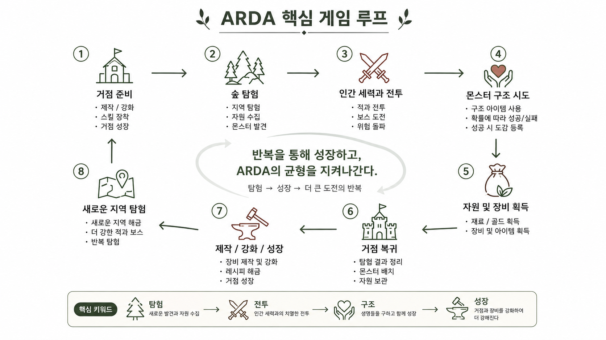
전투 → 보상 획득 → 장비 강화 · 크래프트 → 더 강한 콘텐츠 도전으로 이어지는 성장 루프. 플레이어가 매 사이클마다 명확한 성장을 체감하도록 설계했습니다.
왜 이렇게 설계했는가.
Boot에서 초기화 순서를 통제하고, GameCore가 전역
시스템의 진입점을 담당합니다.
시스템 간 의존성을
단방향으로 정리해, 기능 추가 시 영향 범위를 예측 가능하게
만들었습니다.
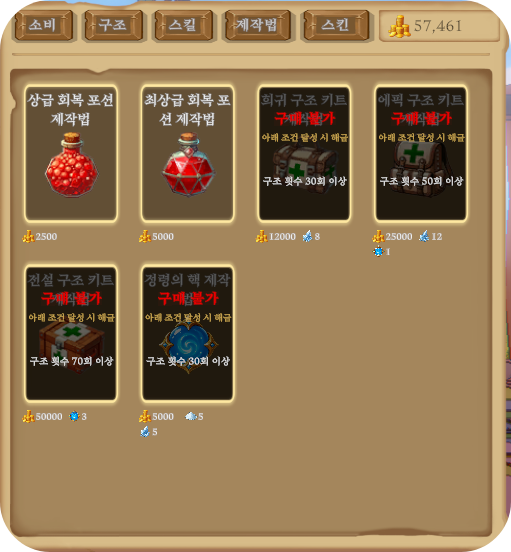
상점 판매 항목을 ScriptableObject로 데이터화하고, 플레이어 진행도에 따라 구매 가능 여부가 달라지는 구조를 만들기 위함.
판매 항목은 스킬·소비 아이템·구조 아이템·제작법· 스킨으로 구분되며, 각 카테고리에 맞는 데이터를 연결해서 사용할 수 있음. 이를 통해 플레이어의 진행도에 따라 상점 구성이 자연스럽게 확장되는 구조를 만듦.
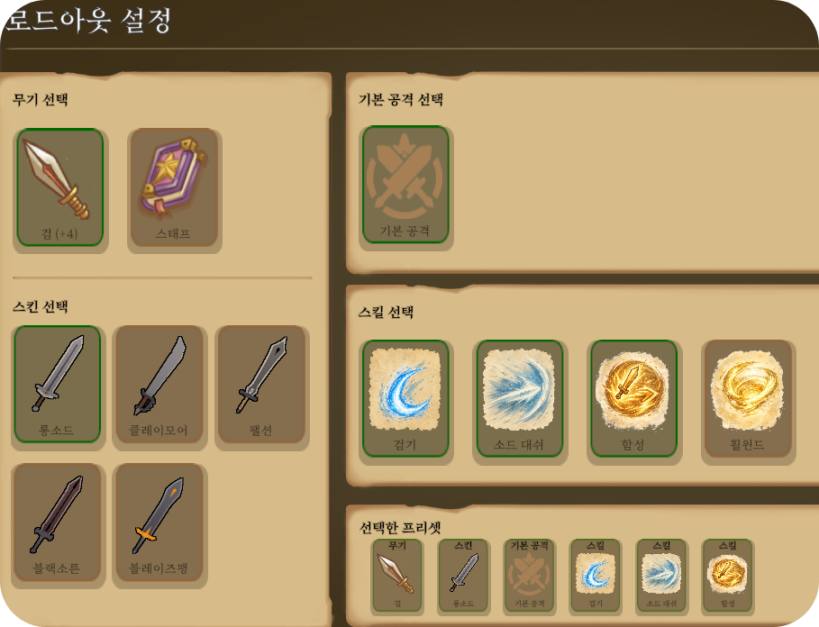
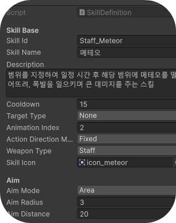
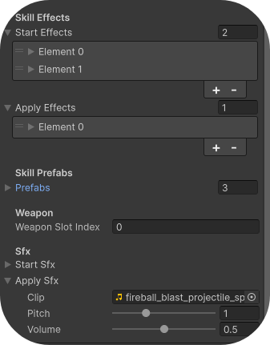
SkillDefinition ScriptableObject에 스킬 구성 요소를 데이터로 정의하고, Effect 단위로 기능을 조립해 다양한 스킬을 만들 수 있도록 구현.
public List<SkillEffectEntry> startEffects = new();
public List<SkillEffectEntry> applyEffects = new();
public List<SkillPrefabEntry> prefabs = new();
public SkillSfxEntry startSfx;
public SkillSfxEntry applySfx;
public void ExecuteStart(SkillContext context)
{
context.Sfx = startSfx;
ExecuteEffects(startEffects, context);
}
public void ExecuteApply(SkillContext context)
{
context.Sfx = applySfx;
ExecuteEffects(applyEffects, context);
}GameObject projectilePrefab = context.Skill.GetPrefab(SkillPrefabType.Projectile);
ProjectileContext projectileContext = CreateProjectileContext(context, multipliers);
Projectile projectile = ProjectilePool.Instance.Get(
projectilePrefab,
spawnPosition,
Quaternion.LookRotation(direction)
);
projectile.Initialize(projectileContext);
GameCore.SoundManager?.PlaySkill(context.Sfx.clip, context.Sfx.volume, context.Sfx.pitch);각 스킬은 기본 정보·조준 방식·타겟 타입·사용 무기 타입·프리팹·사운드·Effect 목록을 데이터로 가지며, 실행 시점을 Start/Apply로 분리해 타이밍별로 필요한 Effect만 실행. 새로운 스킬을 만들 때 코드를 새로 작성하기보다 기존 Effect를 조합하거나 필요한 Effect만 추가해서 확장할 수 있어, 신규 스킬 추가 비용과 밸런싱 반복 속도가 크게 향상됨.
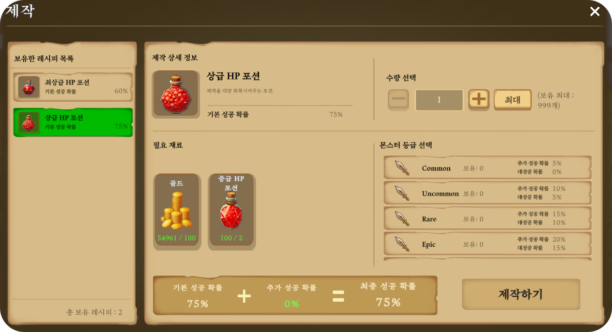
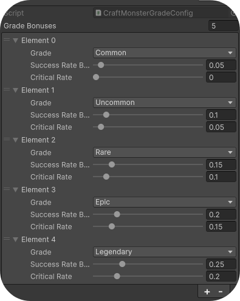
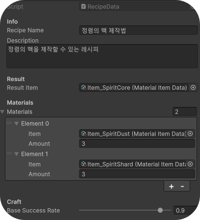
플레이어가 탐험을 통해 획득한 재료로 다양한 아이템을 제작하는 성장 시스템. 기본적인 제작 기능뿐 아니라, 몬스터 구조 시스템과 연계해 제작 성공 확률에 영향을 주도록 설계한 것이 특징.
제작은 모두 RecipeData를 기준으로 이루어지며, 하나의 레시피에는 결과 아이템·필요한 재료·기본 성공 확률이 저장되어 있음. 플레이어가 제작을 시도하면 먼저 레시피 정보를 참조해 제작 가능 여부를 판단.
제작을 시작하면 먼저 필요한 재료를 모두 가지고 있는지 확인하고, 부족하면 제작을 진행하지 않음. 충분하다면 필요한 재료를 먼저 차감한 뒤 제작을 진행하도록 구현했는데, 이는 여러 개를 동시에 제작하는 경우에도 재료 계산이 일관되게 이루어지도록 하기 위함.
재료를 소모한 이후 레시피에 저장된 기본 성공 확률을 기준으로 실패 / 성공 / 대성공 세 가지 결과 중 하나로 판정. 성공하면 결과 아이템을 1개, 대성공하면 2개 획득.
제작 시스템의 가장 큰 특징은 구조한 몬스터를 추가 재료처럼 사용할 수 있다는 점. 플레이어는 제작을 시작하기 전 구조한 몬스터의 등급을 선택할 수 있고, 선택한 몬스터는 제작 시 소모되며 등급에 따라 제작 성공 확률과 대성공 확률이 각각 증가함. 희귀한 몬스터를 사용할수록 성공 가능성은 높아지지만 몬스터를 소비해야 하므로, 플레이어는 지금 사용할지 이후를 위해 보존할지 선택해야 하는 트레이드오프가 생김.
몬스터 등급에 따른 성공 확률 증가량과 대성공 확률은 별도의 데이터에서 관리. 예를 들어 Common · Rare · Epic과 같이 등급마다 성공 확률 증가량과 대성공 확률을 각각 독립적으로 설정할 수 있어, 코드 수정 없이 데이터만으로 밸런스를 조정할 수 있도록 설계.
제작이 끝나면 각 제작 결과를 모두 저장한 뒤, 성공 횟수·대성공 횟수·실패 횟수·획득한 아이템 수를 집계해 UI에 표시. 여러 개를 한 번에 제작하더라도 결과를 한눈에 확인할 수 있음.
구조 시스템과 제작 시스템을 자연스럽게 연결한 점이 핵심 설계 포인트. 보통 RPG에서는 몬스터를 구조해도 단순히 컬렉션만 채워지는 경우가 많지만, ARDA에서는 구조한 몬스터를 제작에 활용할 수 있도록 만들어 구조 콘텐츠가 성장 시스템에도 직접 영향을 주도록 설계함. 또한 성공 확률·대성공 확률·레시피 정보를 모두 데이터로 관리해, 코드 수정 없이 콘텐츠를 확장하거나 밸런스를 조정할 수 있는 구조를 만듦.
몬스터 구조에 성공하면 보상 아이템을 인벤토리에 지급하도록 구현되어 있었는데, 이 과정에서 Collection Modified Exception이 발생해 빌드 환경에서 게임이 크래시되는 문제가 있었음.
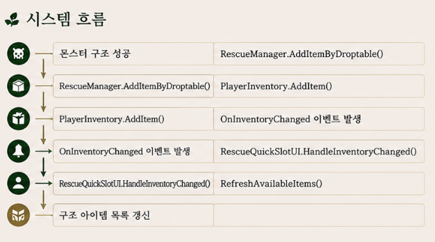
PlayerInventory.AddItem()이 호출되면 인벤토리 변경을 알리기 위해 OnInventoryChanged 이벤트가 발생하도록 구성되어 있었음. 문제는 이 이벤트를 수신한 RescueQuickSlotUI가 퀵슬롯 목록을 갱신하기 위해 인벤토리 데이터를 다시 순회하고 있었다는 점으로, 이 시점은 아직 AddItem()이 완료되지 않은 상태였기 때문에 컬렉션이 수정되는 도중에 같은 컬렉션을 다시 순회하는 상황이 발생함. 분석 결과 컬렉션 자체의 문제가 아니라, 이벤트 호출 과정에서 동일한 데이터에 다시 접근하는 재진입(Reentrance) 문제였음을 확인.
기존에 원본 컬렉션을 직접 순회하던 방식을 변경하여, ToList()로 컬렉션의 복사본을 생성한 뒤 순회하도록 수정. 이후 원본 컬렉션이 변경되더라도 순회 중인 복사본에는 영향을 주지 않도록 처리.
빌드 환경에서 발생하던 크래시를 정상적으로 해결. 이벤트 기반 시스템에서는 컬렉션 순회 시점과 데이터 변경 시점을 반드시 함께 고려해야 한다는 점을 배울 수 있었음.
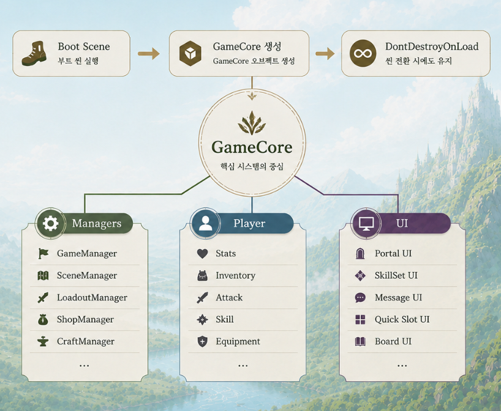
씬 전환 시 데이터 유지가 어렵고, 매니저 객체가 씬마다 중복 생성되는 문제가 발생.
씬이 바뀔 때마다 매니저 객체가 다시 생성되며 이전 상태가 끊기고, 여러 매니저를 각각 싱글톤으로 관리하면서 싱글톤 객체가 늘어날수록 관리가 복잡해지는 구조였음.
Boot Scene에서 GameCore를 미리 생성·세팅하고 DontDestroyOnLoad를 적용해, 게임 전반에서 하나의 Core 객체만 유지하도록 설계. GameCore만 싱글톤으로 관리하고 플레이어·카메라·UI·각종 매니저는 GameCore를 통해 접근하도록 구조화해, 씬이 변경되어도 동일한 객체를 계속 사용하도록 구성.
씬 이동 시에도 플레이어 상태, 장비 정보, UI 상태 등을 안정적으로 유지할 수 있게 되었고, 신규 매니저 추가 시에도 GameCore를 통한 접근 구조 덕분에 영향 범위를 예측하기 쉬워짐.
데이터 기반 설계가 반복 개발 속도와 협업 효율을 크게 높인다는 것을 체감.
시스템 간 이벤트 흐름을 더 명시적으로 문서화하고, 테스트 가능한 구조로 다듬고 싶음.
빛으로 어둠을 정화하는 2D 호러. 개인 프로젝트로 라이팅·정화 시스템을 직접 구현했습니다.
"손전등의 빛으로 어둠 속 존재를 정화하는 서바이벌 호러."
플레이어는 어두운 공간을 탐색하며 빛으로 위협을 찾아내고, 정화해 탈출합니다.
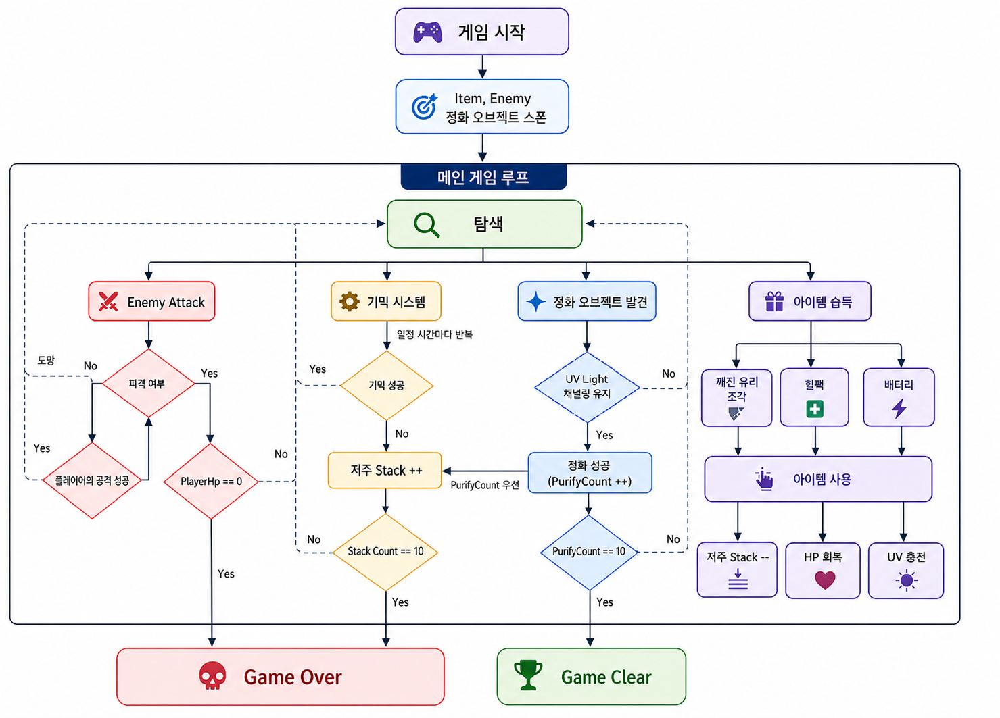
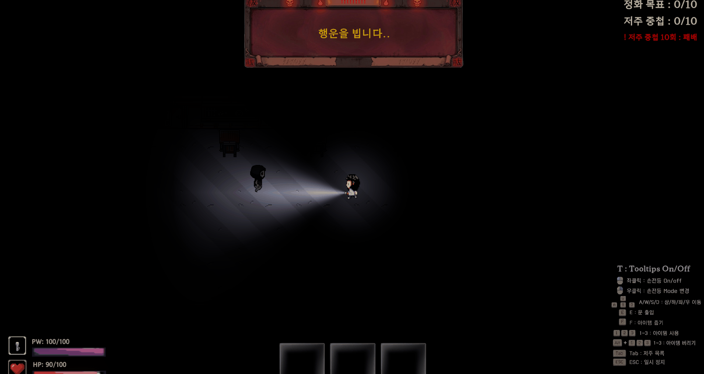
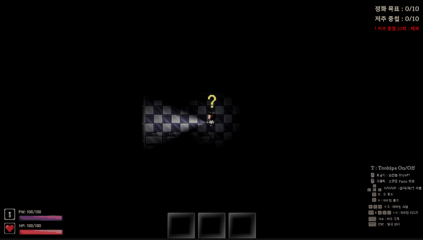
빛을 단순 연출이 아닌 탐색·상호작용·리스크가 함께 얽힌 핵심 게임플레이 메커닉으로 만들기 위함. 빛이 곧 플레이 영역이 되고, 정화라는 목표 행동에는 반드시 저주라는 리스크가 뒤따르도록 설계해 리턴과 리스크가 동시에 발생하는 구조를 만들었음.
Unity 2D의 Light 2D를 활용해 손전등을 구현하고, 빛의 범위만큼 Polygon Collider를 부여해 시야 범위와 상호작용 범위를 일치시킴. 일반 모드와 UV 모드를 전환할 수 있으며, 저주받은 오브젝트는 UV 모드에서만 시각화되고 상호작용이 가능. 일반 후레쉬는 무제한으로 사용할 수 있지만 UV Light는 사용 시 배터리가 소모되고, OFF 상태에서는 배터리가 자연 회복되어 자원 관리 긴장감을 부여.
손전등이 비추는 범위 내 정화 오브젝트와의 거리에 따라 탐색 팝업의 색상과 아이콘이 실시간으로 변화. 아이콘의 반복 크기 조절 애니메이션은 코루틴으로 구현해, 직관적인 피드백으로 플레이어에게 정화 가능 범위를 안내함. Collider 내 오브젝트와의 거리를 기준으로 Search / Active 상태를 판정.
지속 조사로 정화 게이지를 충전해 완료 판정 시 오브젝트를 정화하지만, 정화가 일어나는 순간 반드시 저주가 함께 발생하도록 설계. 정화 완료 시 결과 팝업과 점수 연출로 보상을 체감시키는 동시에, 저주로 인한 리스크를 감수하게 만들어 '리턴과 리스크의 동시 발생'이라는 핵심 루프의 긴장감을 형성.
빛 조사 → 거리 기반 탐색 UI 반응 → 지속 조사로 정화 게이지 충전 → 정화 완료 및 저주 발생 → 결과 팝업.
빛이 탐색·상호작용·리스크를 모두 관통하는 핵심 메커닉으로 자리잡았고, 정화 행동에 리스크를 결합해 핵심 루프의 몰입도와 긴장감이 함께 향상됨.
몬스터를 매번 생성·삭제하는 대신, 유효한 영역에서 안정적으로 지속 스폰하고 재사용할 수 있는 구조가 필요했음.
NavMesh로 유효한 Area를 미리 Bake해두고, 스폰 시점에 그중 실제로 이동 가능한 Area를 탐색해 스폰 후보로 사용. 임의 좌표가 아닌 NavMesh 상에서 검증된 영역에서만 몬스터가 생성되도록 보장.
몬스터를 유효한 영역에서 지속적으로 생성하고 관리하는 시스템. 플레이어 및 다른 몬스터와의 거리를 계산해 너무 가깝거나 겹치지 않는 적정 위치를 찾아 스폰하고, 층별 Monster Limit을 확인해 층마다 스폰 가능한 몬스터 수를 제한하며, 플레이어 상황에 따라 동적으로 스폰·재사용.
기존에 구현했던 생성/삭제 구조를 Object Pooling 기반 재사용 구조로 개선. 층별 최대 스폰 수를 합산해 Pool의 defaultCapacity를 설정함으로써, 몬스터 최대 스폰 수를 높였음에도 성능 안정성을 유지.
NavMesh Area 탐색 → 플레이어 거리·층별 Limit 확인 → Get()으로 Pool에서 몬스터 활성화 → Release()로 비활성화 후 Pool 반환 → Reset()으로 agent, 위치(agent.Warp), sprite 등 상태 초기화.
생성/삭제로 인한 성능 저하 없이 몬스터 최대 스폰 수를 늘릴 수 있었고, 항상 유효한 영역과 적정 거리에서 스폰되어 어색한 스폰이 사라짐.
플레이어가 아이템을 획득한 직후, 동일한 위치에 아이템이 즉시 다시 생성되는 문제가 발생. 동일한 위치에서 Respawn Time을 기다리기만 해도 같은 자리에 아이템이 계속 재생성되는 구조적 문제였음.
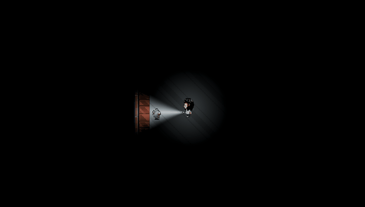
아이템 스폰 조건이 전체 아이템 개수 기준으로만 동작해, 각 스폰 포인트가 개별적인 상태를 가지지 않는 구조였음. 그 결과 빈 스폰 위치가 하나라도 생기면 모든 스폰 위치가 동시에 Respawn 후보가 되어버리는 문제로 이어짐.
→ 전역 타이머 기반 구조를 제거하고, 스폰 포인트별 상태 머신으로 재설계.
아이템 획득 직후 같은 위치에서 즉시 재생성되던 버그가 해소되고, 스폰 포인트별로 독립된 상태를 가지게 되어 예측 가능한 아이템 밸런스와 안정적인 재스폰 흐름을 확보.
혼자서 시스템을 처음부터 설계·구현하며 게임 루프 전체를 조망하는 시야를 얻음.
연출·사운드 피드백을 강화하고, 레벨 디자인을 데이터화해 확장하고 싶음.